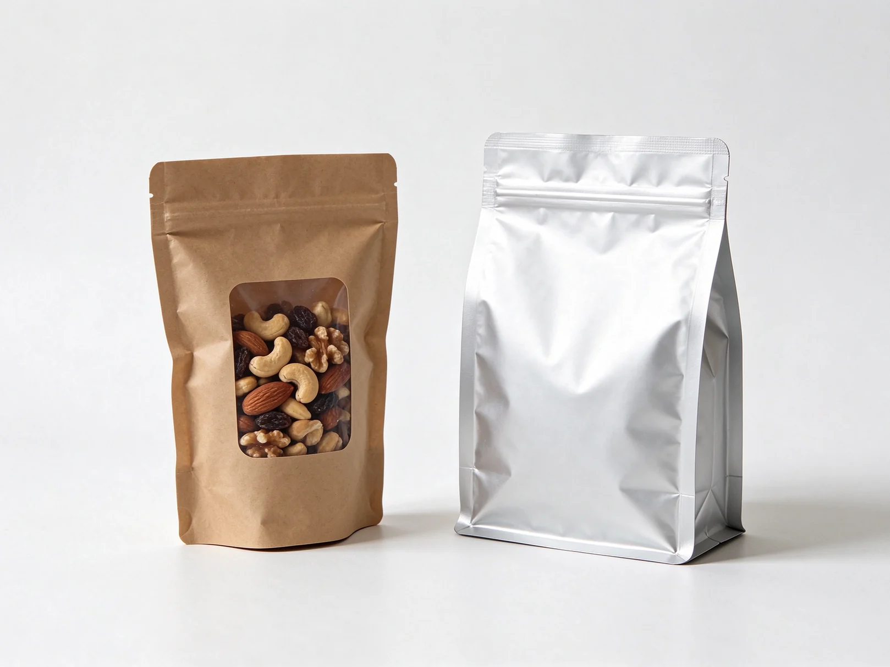

Nuts fail from the inside. The oil in the product reacts with oxygen, light and heat long before anything visible happens, and by the time a customer tastes it the pack has already failed. Barrier and headspace oxygen control both matter.

Sample shown for format reference only; any branding on the sample belongs to its respective owner. Production uses your own artwork and specifications.
Two decisions set the structure: how much oxygen the product must be shielded from, and whether the pieces are hard enough to puncture the film. Fat content and piece shape drive both.
Rancidity is usually invisible at the point of packing and obvious at the point of eating.
Nut oils react with oxygen, and the reaction speeds up sharply with heat and light. An oxygen barrier alone is not enough if the headspace was never flushed.
Nuts lose their crunch when they pick up moisture; dried fruit hardens or turns sticky when it loses it. The moisture direction differs, and so does the film.
A clear pack on a bright shelf lets light accelerate the same oxidation. Where shelf life is long, light protection belongs in the structure, not just in the marketing.
Hard piece edges and shell fragments can pierce thin film or open a seal during filling and transit. Thickness, outer layer and fill weight are specified together.
Indicative starting points. Fat content and piece hardness come before design.
| Mixed nuts & trail mix | High oxygen and light barrier in a flat bottom or stand-up format with a zipper |
|---|---|
| Whole nuts (walnut, almond, cashew) | Barrier film plus puncture resistance; nitrogen flushed to protect the headspace |
| Raisins, dates and dried fruit | Moisture-stable structure that resists blocking and sugar pick-up at the seal |
| Roasted and flavoured nuts | Oil-resistant inner layer plus oxygen barrier; the roast accelerates oxidation |
| Nut and dried fruit gift packs | Rigid flat bottom with a large print panel and a window for display |
| Bulk and ingredient supply | Large-format bags or roll film for repackers, sized to the fill line |
Selected against fat content, required shelf life, piece hardness and whether the pack must show the product.
Nut brands rarely sell one SKU. Almonds, cashews, mixed nuts and dried fruit usually go out as a family of packs with related but different designs, and each needs a different fill weight. Digital printing keeps that family in one order without a cylinder set per design, which is why short and multi-SKU runs are workable; once a line repeats at volume, gravure becomes the lower unit cost route.
Fat content and piece shape decide the structure before the artwork does.
What roasters and packers ask before choosing a film.
Box base and a wide front panel for retail nut packs.
Zipper, window and barrier construction options.
Barrier logic across chips, nuts and confectionery.
What drives unit price and how to lower it.
Aroma and light protection for a dry product.
Send the product, fat content, piece size, target shelf life and filling method, and we reply from Qingdao within one business day.